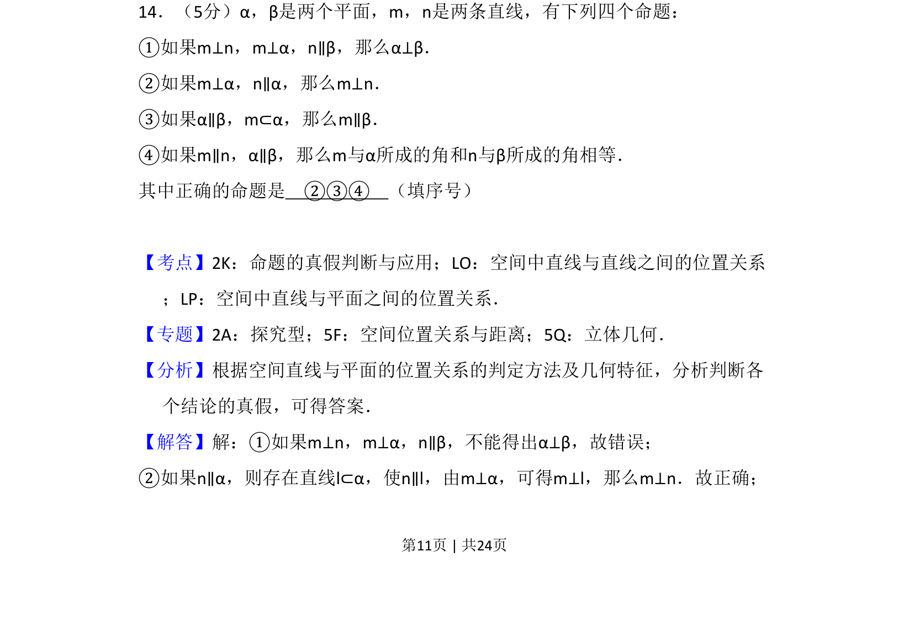
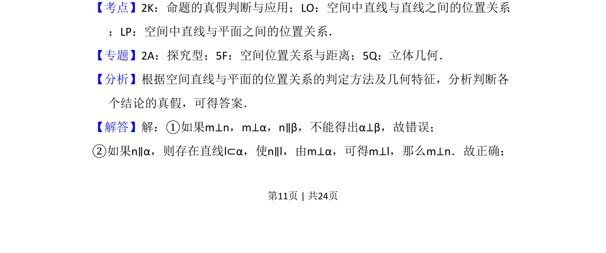
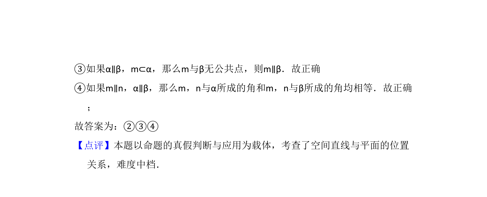

考点：空间中直线与平面之间的位置关系 命题真假判断

该题考查空间线面平行垂直关系及命题真假判断。


📄 原 PDF 第 11 页：
素材/真题/吉林/2008-2024·（吉林）数学高考真题/2016年高考数学试卷（理）（新课标Ⅱ）（解析卷）.pdf
14．（5分）α，β是两个平面，m，n是两条直线，有下列四个命题： ①如果m⊥n，m⊥α，n∥β，那么α⊥β． ②如果m⊥α，n∥α，那么m⊥n． ③如果α∥β，m⊂α，那么m∥β． ④如果m∥n，α∥β，那么m与α所成的角和n与β所成的角相等． 其中正确的命题是 ②③④ （填序号）
【考点】2K：命题的真假判断与应用；LO：空间中直线与直线之间的位置关系 ；LP：空间中直线与平面之间的位置关系．菁优网版权所有 【专题】2A：探究型；5F：空间位置关系与距离；5Q：立体几何． 【分析】根据空间直线与平面的位置关系的判定方法及几何特征，分析判断各 个结论的真假，可得答案． 【解答】解：①如果m⊥n，m⊥α，n∥β，不能得出α⊥β，故错误； ②如果n∥α，则存在直线l⊂α，使n∥l，由m⊥α，可得m⊥l，那么m⊥n．故正确；